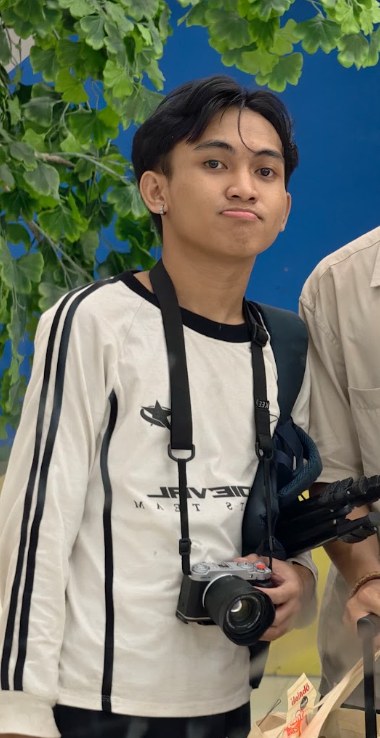
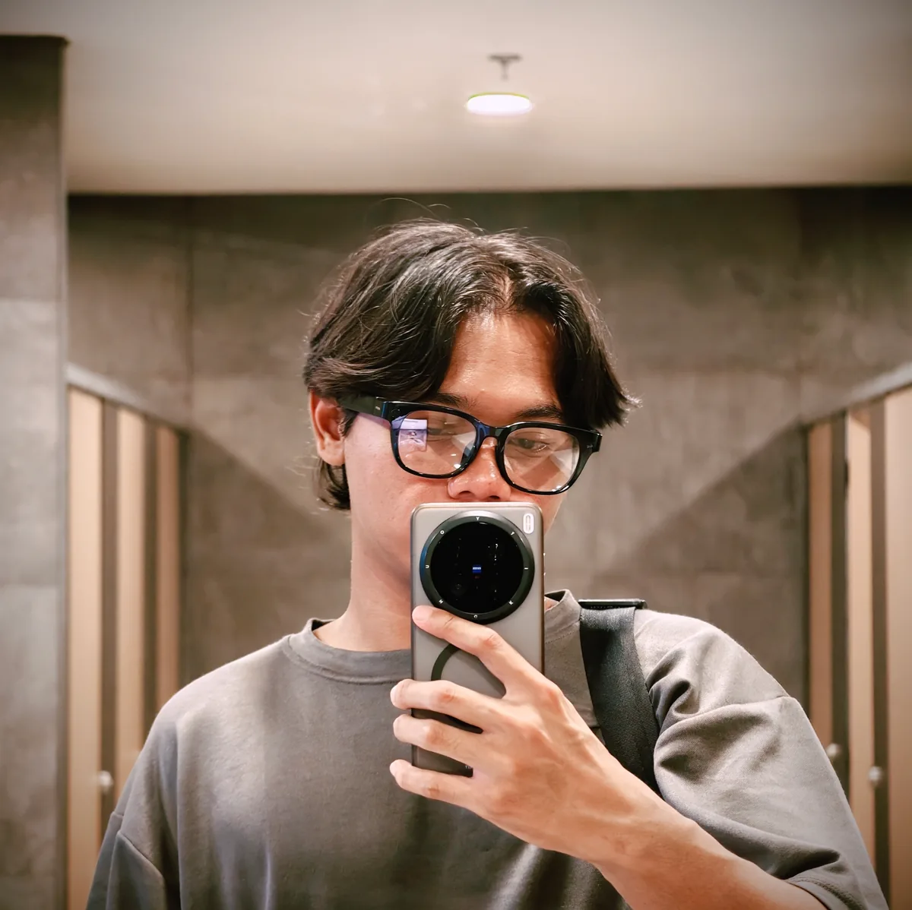

FEATURED DROP / 推しの一枚
Clockwork
shadow.
Sandrone’s puppet-core frame stays in the archive. Quiet menace, clean composition, zero NPC energy.
DUAL-CAMERA UNIT / 二人撮影隊
Two rookies. One main-character agenda.
二人の視点で、君の物語を残す。
Two characters. One frame-stealing agenda.二人の主役、視線を独占。
混沌との遭遇。次は、誰の視点で残す？
You’ve met the chaos. Now pick who captures it.
SELECT YOUR POV / 視点選択
Two photographers. Two POVs.
Pick IKI or NAYOTA below to explore their frames.
Event chaos, quiet portraits, and one suspiciously photogenic boar.
FULL PORTO / 全作品
Sixteen complete series from Iki’s camera route. 推しも物語も、まとめて一気見。Every character and storyline, fully unlocked.
Soft light, saturated color, and frames that refuse to be NPC-coded.
FEATURED DROP / 推しの一枚
Sandrone’s puppet-core frame stays in the archive. Quiet menace, clean composition, zero NPC energy.
POV DATA / 撮影者データ

Bekasi-based rookie photographer, locked in on cosplay photography since February ’26. The set stays chill, the direction stays clear, and the final frames stay canon.
INSTAGRAM · @LOWKEYIKI ↗
Tambun-based rookie photographer and Iki’s co-op camera. Still learning the meta, already landing shots that hit. Same rookie arc. Zero NPC frames.
INSTAGRAM · @NAI.YOTA ↗SHARED LOADOUT / 共用機材
One shared kit across both POVs: compact Fujifilm bodies, sharp glass, and the same clean edit stack.
NEXT LOBBIES / 次の現場
COSPLAY PHOTO COMMISSION / 撮影料金
Clear rates, no mystery loot box. Same transparent commission table as the solo route.
RP200K
PER PROJECT / 一案件
Zero timer energy. Take the time, build the lore, get the shot.
RP100K
15 MINUTES / 15分
RP150K
30 MINUTES / 30分
Quick session, still main-character certified.
JABODETABEK ONLY
対応エリア：ジャボデタベック限定
ONE SLOT PER WEEK — DM FIRST
週一枠・先着DM制
NO TIME LIMIT FOR NON-EVENT
個撮は時間制限なし
4+ PEOPLE? CUSTOM RATE
4名以上は料金要相談
EVENT RATE CAN CHANGE — ASK FIRST BEFORE BOOKING
イベント料金は変動する場合あり・予約前に要確認
PARTY INVITE / 連絡